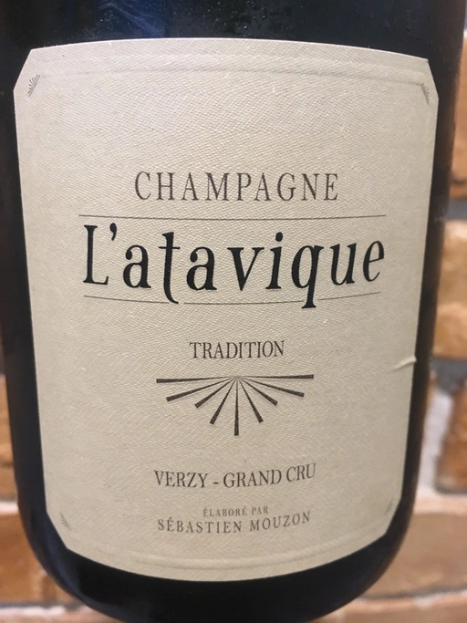

- Type
- White Sparkling, Extra brut
- Producer
- Mouzon-Leroux
- Vintage
- NV
- Location
- France, Champagne AOC
- Grapes
- Pinot Noir, Chardonnay
- Alcohol
- 12
- Sugar
- 8
- Price
- 1510 UAH, 1331 UAH
- Cellar
- N/A
Ratings
2020-06-12 - 8.50
Excellent wine. Baked apple, creme brulee, boiled condensed milk and touch of milk chocolate. Sophisticated. Great QPR.
2020-10-07 - 8.20
Second try and second success. Open and bright aroma. Baked apple, apple seeds and fresh sunflower seeds, cream and lemon. Smooth and tasty. Flavours of apple and mushrooms. Great value.
2022-06-15 - 8.25
I feared that this wine will fail to show itself after Pierre Frick Crémant d’Alsace 2018, but actually it turned out to be great complement. Precise, delicate and sophisticated. Lemon, sunflower seeds, apple seeds with some baked notes mixed with cream. Long aftertaste, almost perfect balance, good volume. Pleasure!
Based on 2017, 2016 and 2015, degorged in october 2020.